Abstract
Understanding objects in 3D from a single image is a cornerstone of spatial intelligence. A key step toward this goal is monocular 3D object detection—recovering the extent, location, and orientation of objects from an input RGB image. To be practical in the open world, such a detector must generalize beyond closed-set categories, support diverse prompt modalities, and leverage geometric cues when available. Progress is hampered by two bottlenecks: existing methods are designed for a single prompt type and lack a mechanism to incorporate additional geometric cues, and current 3D datasets cover only narrow categories in controlled environments, limiting open-world transfer.
In this work we address both gaps. First, we introduce WildDet3D, a unified geometry-aware architecture that natively accepts text, point, and box prompts and can incorporate auxiliary depth signals at inference time. Second, we present WildDet3D-Data, the largest open 3D detection dataset to date, constructed by generating candidate 3D boxes from existing 2D annotations and retaining only human-verified ones, yielding over 1M images across 13.5K categories in diverse real-world scenes.
WildDet3D establishes a new state-of-the-art across multiple benchmarks and settings. In the open-world setting, it achieves 22.6/24.8 AP3D-dist on our newly introduced WildDet3D-Bench with text and box prompts. On Omni3D, it reaches 34.2/36.4 AP3D with text and box prompts, respectively. In zero-shot evaluation, it achieves 40.3/48.9 ODS on Argoverse 2 and ScanNet. Notably, incorporating depth cues at inference time yields substantial additional gains (+20.7 AP on average across settings).

Video Demo
iPhone App Demo
Interactive Visualizations
Explore WildDet3D-Data and model predictions interactively through our visualization servers.
Dataset Viewer
Browse WildDet3D-Data interactively—explore 3D bounding box annotations across 1M+ images and 13.5K categories in diverse scenes.
Model Comparison Visualizer
Compare WildDet3D predictions against baselines on the full WildDet3D-Bench with side-by-side 3D box visualizations.
Model Architecture
WildDet3D uses a unified geometry-aware architecture with dual-vision encoders for RGB and optional RGBD input. A depth fusion module integrates geometric cues when available, while a promptable detector unifies text, point, and box prompts. Cascaded 2D and 3D detection heads predict full 3D bounding boxes with metric depth, dimensions, and 6-DoF orientation. The model gracefully degrades to monocular mode when depth is unavailable.

WildDet3D-Data
We introduce WildDet3D-Data, the largest open 3D detection dataset to date. It is constructed by generating candidate 3D boxes from existing 2D annotations across COCO, LVIS, Objects365, and V3Det, then filtering with geometric/semantic checks and retaining only human-verified annotations. The result is a diverse, large-scale dataset spanning indoor, outdoor, and nature scenes.
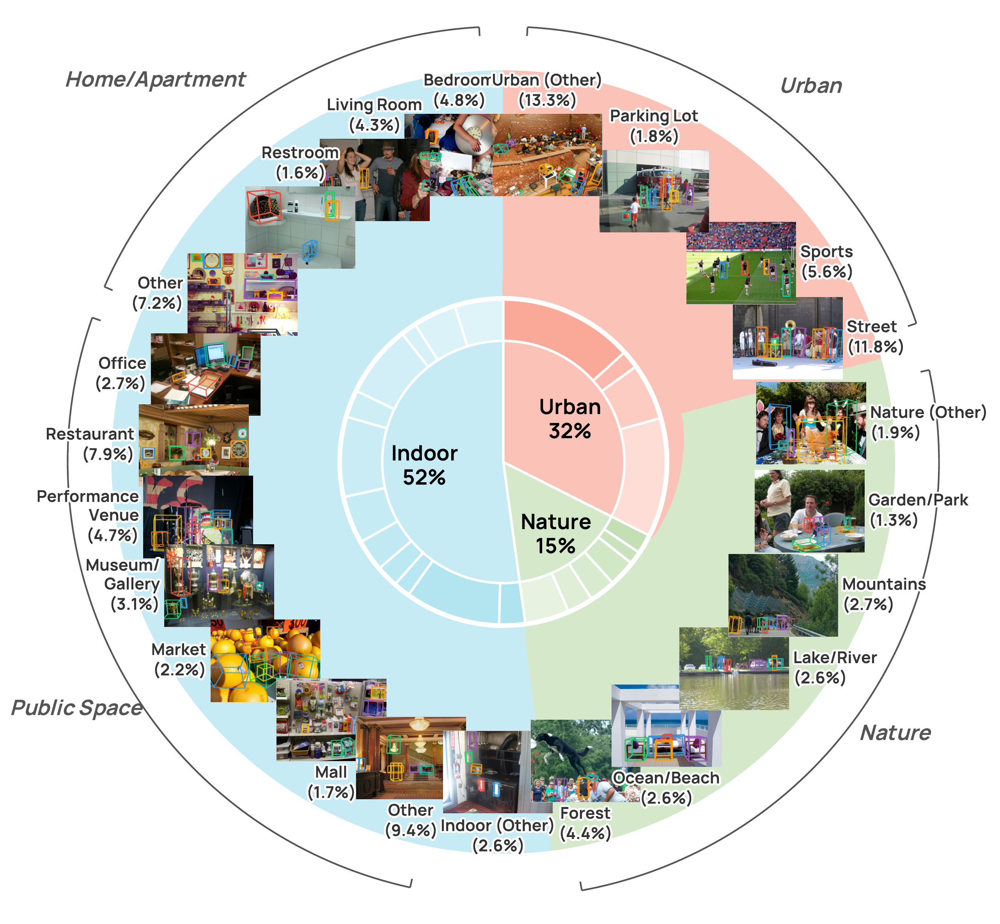

Qualitative Results
Text-Prompted Detection
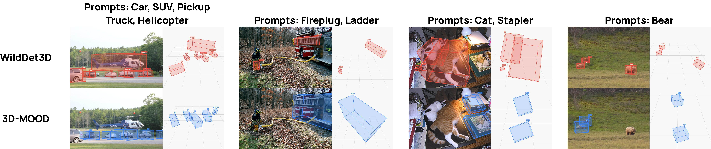
Box-Prompted Detection
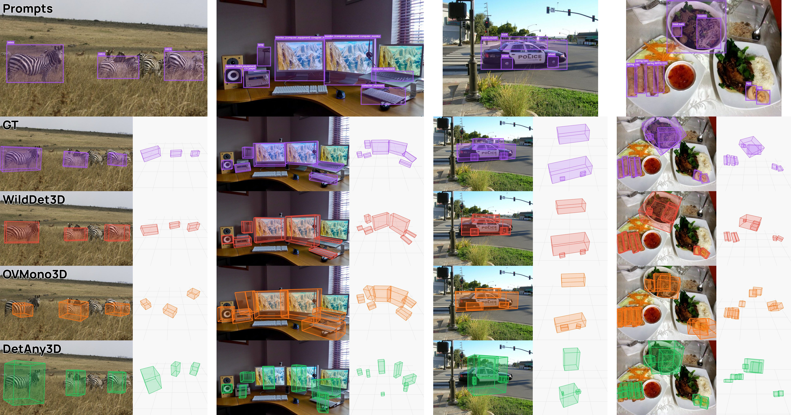
Applications
Beyond benchmark evaluation, WildDet3D is deployed across a range of real-world platforms, demonstrating its versatility as a general-purpose 3D perception module.
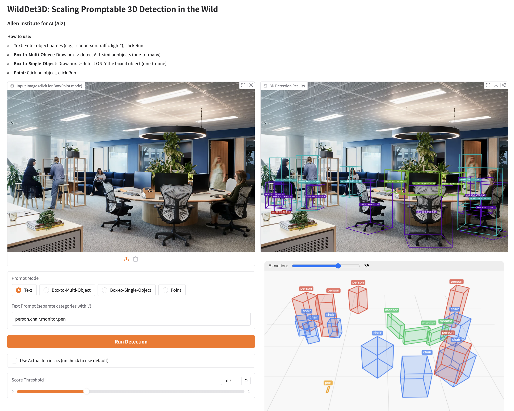
Web Demo
Interactive demo on Hugging Face Spaces. Upload any image, provide text or box prompts, and visualize 3D bounding box predictions in real time.

iPhone App
On-device 3D detection via ARKit with LiDAR depth, supporting open-vocabulary text queries and 2D box prompts with AR overlays anchored to the physical scene.

VLM Agent
Paired with vision-language models for referring expression localization—the VLM reasons and produces a 2D box, WildDet3D lifts it to a full 3D bounding box.
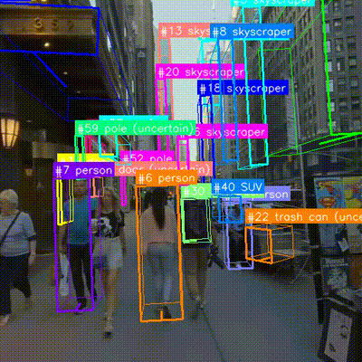
Zero-Shot Tracking
Track objects in video sequences with zero-shot 3D detection, combining per-frame predictions with temporal consistency.

Augmented Reality (Meta Quest 3)
Passthrough AR with 3D bounding boxes rendered in real time. Users can query objects by category and see metric 3D boxes anchored in physical space.
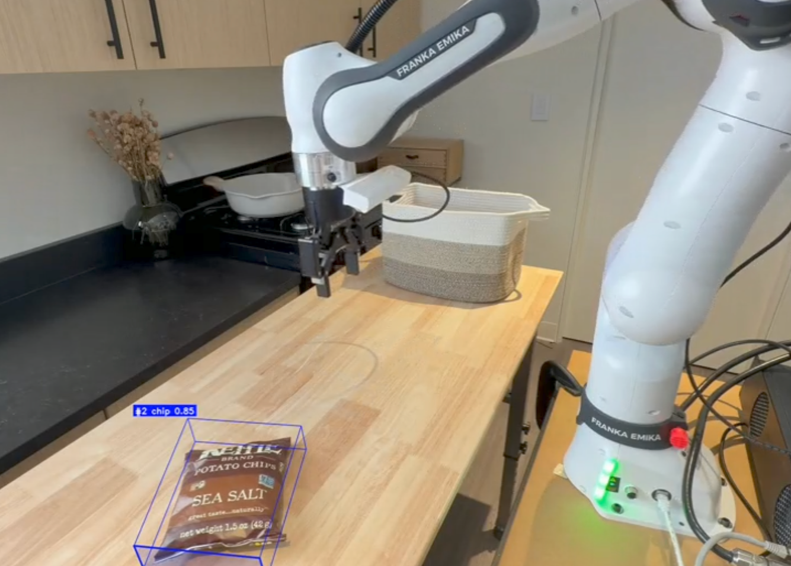
Robotics
Open-vocabulary 3D detection for Franka Emika Panda manipulation. Predicted 3D boxes are transformed to the robot's frame for zero-shot grasp pose generation.
More Examples
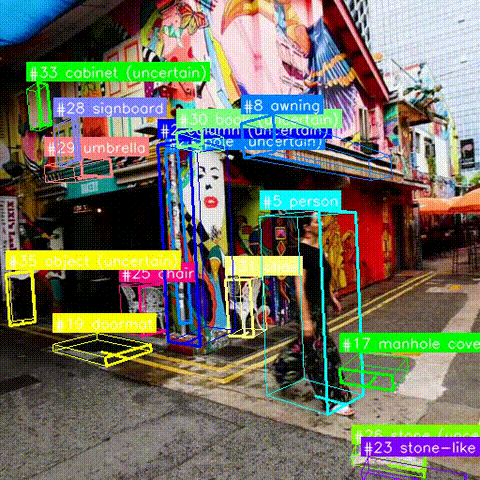
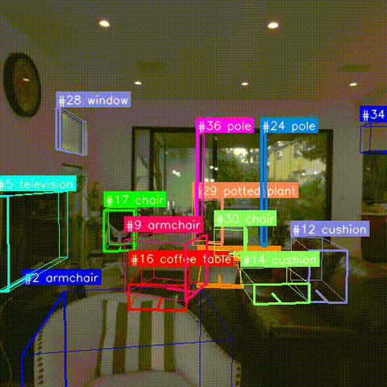
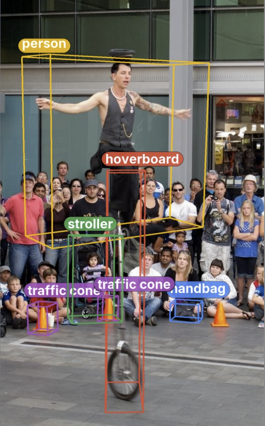
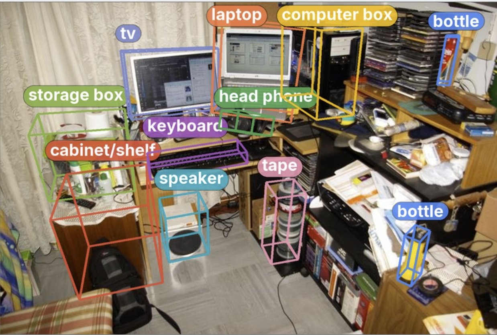
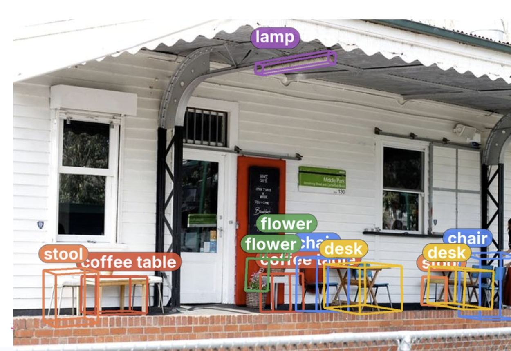
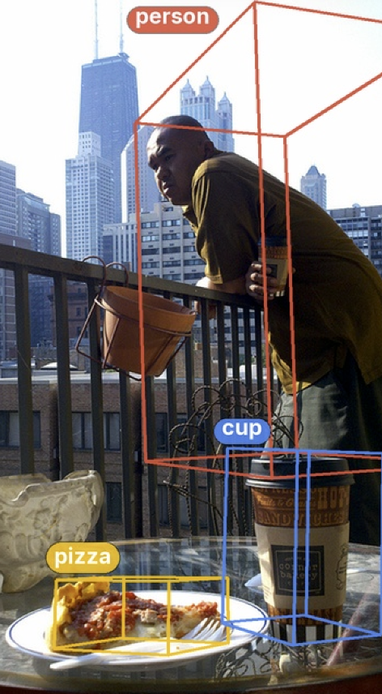